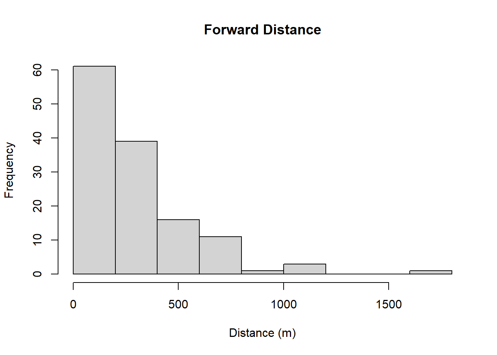

Chapter 4 Real Data
We will now use these methods to analyse the real snow leopard prey data. The observers surveyed 60 transects in 10 blocks twice, with 30 minutes between the first and second observer starting the survey. The observers had limited rangefinders so only the first observer recorded the radial distance to the group, the bearing of the path and the bearing of the group they saw. This means we cannot use mrds to analyse this data as there are no distances for the second observer. There were 2 species included in the survey: ibex and argali. They saw 242 groups in total, and 193 of them have distance data.
4.1 Mark Recapture
We start by using the Chapman estimator to estimate the total number of groups. This gives us an estimate of 425 with a 95% confidence interval of 348.4897014, 517.95112. Separating the data by species we estimate there are 308 (241.2495366, 392.1258668) ibex groups and 115 (84.2854575, 156.1285628) argali groups. From our previous simulations we expect this to be negatively biased, as there is unmodelled heterogeneity in the population from detectability decreasing with distance. The estimates for the individual species are probably more reliable as it accounts for any difference in detectability between the two species.
4.2 Conventional Distance Sampling
We now turn to CDS. Upon closer inspection, many detection distances (both perpendicular and forward) appeared to be rounded to zero, likely as a result of the bearings being rounded to the nearest 5 degrees. To prevent this from impacting the model fit we simply added a small random number to each zero observation. We only use the jittered perpendicular distances for conventional distance sampling, but we will use the jittered forward distances in the 2D section.

Figure 4.1: Histograms of perpendicular distances
We decided to truncate the data at 1600m, which excluded one outlier at 1820m. We then fitted a series of models using both half normal and hazard rate detection functions to the combined data set and to each species individually. We included size, block and observer (and species in the combined model) as covariates, and chose the best model using AIC. (Full analysis can be found in the _CDS analysis file.)
The best fitting model according to AIC involved fitting separate hazard rate functions with block as a covariate to the ibex and argali data sets. However, the argali detection function has a large spike at zero, which is not realistic.

(#fig:plot-separate species)Detection function and QQ-plots for ibex and argali models
Therefore, we choose the combined model as our best model, as the AIC was only slightly higher (2575.8122528 vs 2573.502628) and it doesn’t have the spike at zero.

Figure 4.2: Detection function and QQ-plots for combined model
This gives an estimate of 733 total groups with a 95% confidence interval of 575.539745, 889.8826683. This is much higher than the MCR estimate, but may be biased if the animal distribution is not uniform.
4.3 2D Distance Sampling
We will now use 2D distance sampling to investigate if the animals are uniformly distributed. 61 of the detected groups were behind the observers so did not have a valid “forward” distance. This leaves 132 usable observations.

We truncated the data at y = 1700, excluding one observation at 1770m.
Our best fitting model used the 2-parameter inverse power hazard detection function and a half normal distribution for the animal density. All of the best fitting models used a half normal animal distribution, which implies that the animals are attracted to the line rather than avoiding it as initially thought. This could be due to the non random line placement, as the observers travel along valleys or ridges that are easier to walk along so the animals could also favour the easier terrain.

Figure 4.3: Detection and distribution functions for best model (inverse power and half-normal)
We tried fitting different models to each species in the survey, but this had a higher AIC than the combined model (3514.875933 vs 3511.4910574 for combined model). Interestingly, the argali appear to be uniformly distributed across the area whereas the ibex exhibit line attraction. However, there are only 39 argali groups with valid distances so further investigation is needed before drawing any conclusions. With more time we would fit a model that had species as a covariate.
The best combined model estimates there are 401 groups in total.
4.4 Summary
The 2D distance analysis suggests that the animals are attracted to the line. This would make the conventional distance estimate positively biased, and so it is reasonable that the 2D estimate would be lower. We would expect the mark recapture estimate to be negatively biased due to the declining detectability with distance, but it is higher. This is likely due to imperfect matching in the data, so we recommend 2D Distance sampling as the most reliable estimate, as it is not impacted by imperfect matching or non uniform animal distribution.
| Point Estimate | 95% Confidence | Interval | |
|---|---|---|---|
| 2D Distance | 401 | 353.2800 | 486.4300 |
| Conventional Distance | 733 | 575.5397 | 889.8827 |
| Chapman | 425 | 348.4897 | 517.9511 |
|
|
Whilst the combined model was the best fit for the data, we have included our separate estimates for each species as they may be more useful in practice.